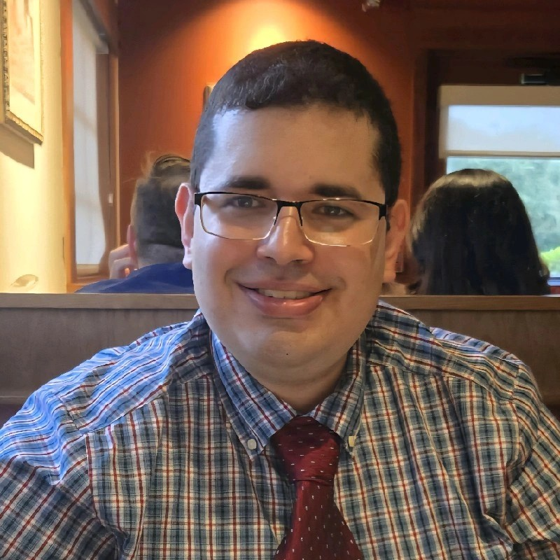
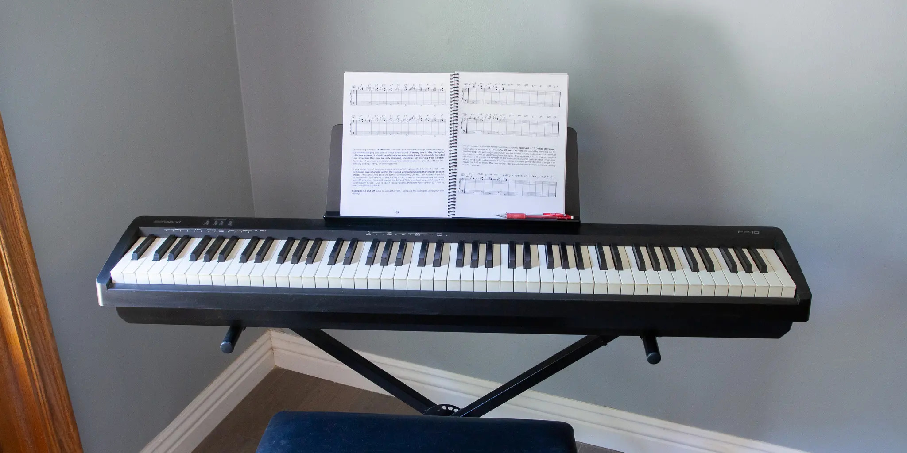
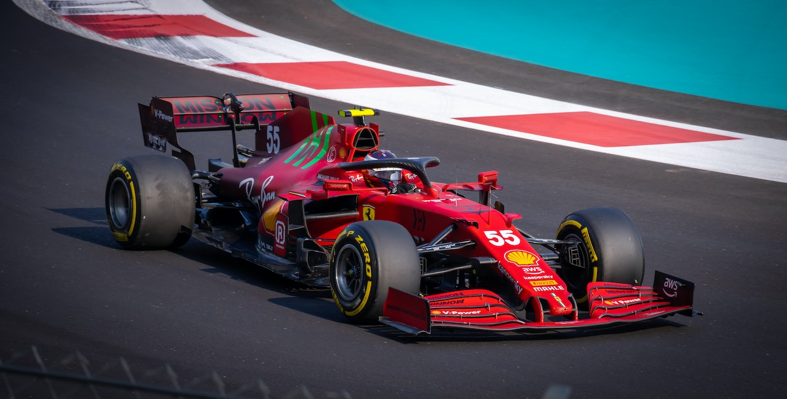
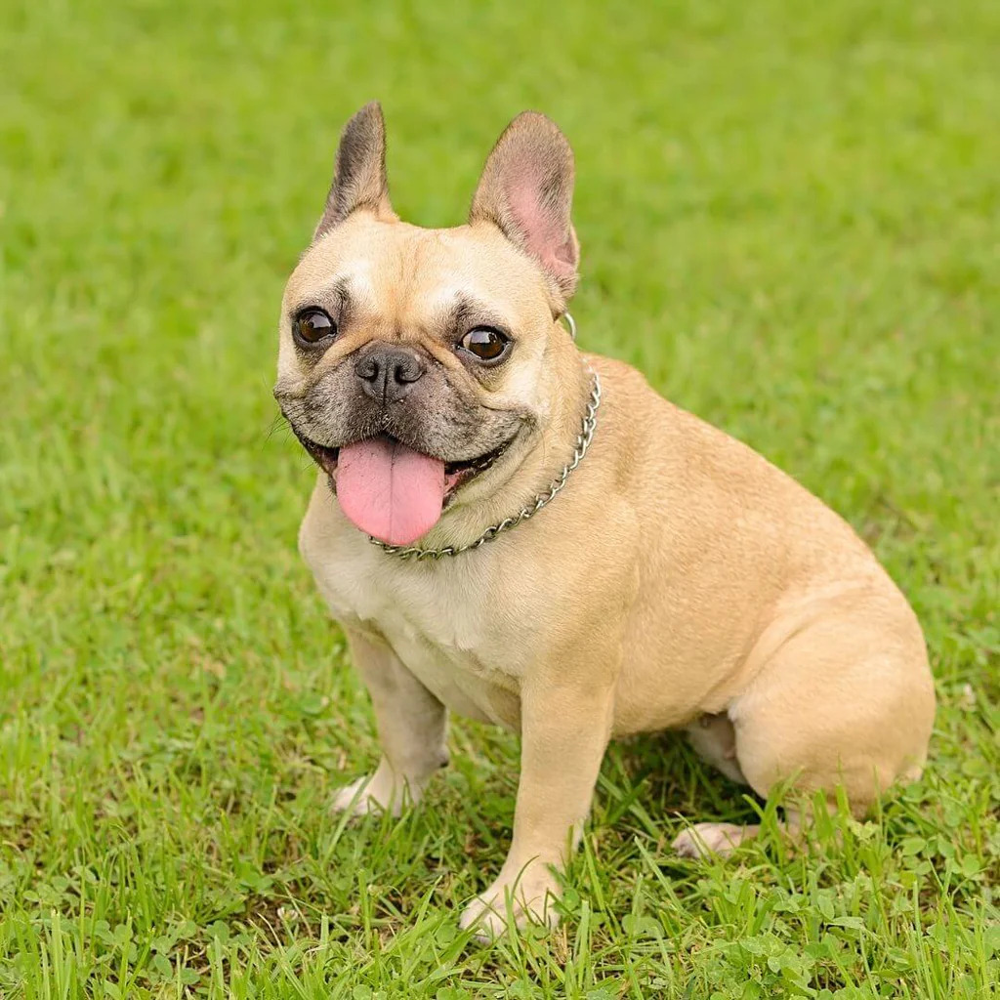

Portfolio

I am an Electrical Engineering Graduate student at the University of South Florida with a focus in Wireless Circuits and Systems along with Communication Systems. I am a member of the National Society of Leadership and Success and a proud Alumni of the Lydia R Daniel Honors Program at HCC. I have a passion for becoming a better person every day and using what I learn to apply it in the real world.



I enjoy learning new things every day, playing the piano, and playing video games such as sports ones and strategy ones. I also enjoy watching soccer games, Formula 1, listening to music, and spending time with French Bulldogs. I like being the best person that I can by helping others and being a good listener.
Email: carlosm4@usf.edu